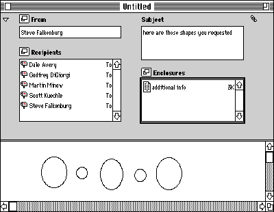
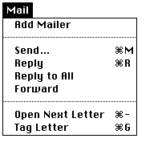
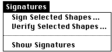
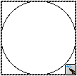
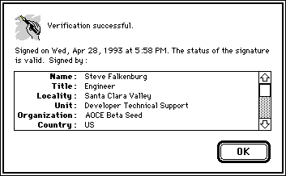
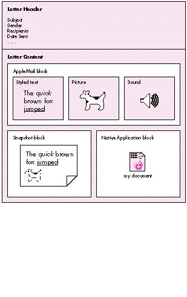

PowerTalk is a new software product based on the Apple Open Collaboration
Environment (AOCE). By adding support for PowerTalk to your application, you can
begin to take advantage of the wide range of services provided by the emerging world of
collaborative computing. This article touches on two areas of this environment --
electronic mail and digital signatures -- and shows how they can be incorporated into
a typical application program.
AOCE consists of a set of human interface elements and programming interfaces that
make collaboration on an electronic document simpler and more secure; PowerTalk is
its client software component (and PowerShare its server software). Two elements of
PowerTalk are the Standard Mail Package's mailer, which provides application-level
electronic mail support, and the DigiSign digital signature mechanism, which
safeguards documents from electronic tampering. Support for these features of
PowerTalk should not be limited to networking and communications applications. The
real power of PowerTalk lies in its ability to be built into a wide range of productivity
applications, from spreadsheets to presentation packages. Ultimately, the Send and
Sign menu items should be as pervasive as Print is today.
Using a small drawing application called CollaboDraw as our example, we'll go step by
step through the process of adding support for the PowerTalk Standard Mail Package
and Digital Signature Package.
Before walking through the code, we'll give a brief overview of the PowerTalk features
we'll be adding to CollaboDraw. Very basic descriptions of the Standard Mail Package
and Digital Signature Package follow. Additional information on PowerTalk can be found
in the full PowerTalk API documentation.
PUSHING THE STANDARD MAIL ENVELOPE
One of the unique features of PowerTalk is that it allows many individual applications
to add support for mailing documents directly, without going through an intermediate
e-mail application such as QuickMail or AppleLink. The Standard Mail Package
provides a consistent interface for mailing documents from one user to another within
applications, and includes all of the human interface elements needed to address, send,
and receive messages. The major component of the Standard Mail Package is themailer .
The mailer is a window pane that's at the top of all documents that are mailed. The
mailer window pane can be contracted to display only a single line or expanded to allow
manipulation of the mailer's contents. Figure 1 shows a CollaboDraw window
containing an expanded mailer window pane.

Figure 1 CollaboDraw Window With a Mailer
The mailer can be thought of as a kind of extended mailing label. It contains not only the
names of the sender and receivers of the letter, but also a subject for the letter and an
area where files and folders can be enclosed.
Making an application mail-aware involves adding several standard menu items. In
CollaboDraw, there's a separate Mail menu, but if this isn't a viable option, it's
acceptable to add these menu items to the File menu. The standard Mail menu is shown
in Figure 2. The items Reply to All, Open Next Letter, and Tag Letter are optional and
not required for minimal mailer support.

Figure 2 The Mail Menu
When users want to send a document from CollaboDraw, their favorite
PowerTalk-savvy drawing program, they simply add a mailer to their drawing
document, transforming the document into a letter. They fill out the mailer and choose
Send from the Mail menu. The letter is then sent automatically to the recipient's
mailbox in the Finder. Recipients of the document would, in turn, double-click the
letter they received in their PowerTalk Finder mailbox, which opens the letter in
their copy of CollaboDraw and displays it with the attached mailer. Once they were
done reviewing the letter, they could keep the mailer attached if they wanted to reply
to the letter, forward the letter, or keep the additional information the mailer
provides. Or they could select Remove Mailer from the Mail menu, which removes the
mailer from the window, transforming the letter back into adocument. (The Remove
Mailer menu item replaces Add Mailer when there's a mailer in the window.)
Much of the power of PowerTalk Standard Mail stems from the fact that all
PowerTalk-aware applications support an additional file type: the letter. In the
Finder, letters can appear in disk windows, in the PowerTalk Finder mailbox window,
and even on the desktop or in the trash. Users can treat these letters like standard
documents, dragging them between folders to copy them, dragging them to the trash to
erase them, and even double-clicking them or dragging them to an application to open
them. When integrating mailer support into an existing application, it's best to think
of letters in much the same way -- simply as an additional document type. Using this
strategy, we'll see that adding a mailer requires little in the way of application
redesign.
UNLOCKING THE POWER OF DIGITAL SIGNATURES
Another very powerful PowerTalk feature that can be added to document-based
applications with a small amount of effort is digital signatures. PowerTalk's DigiSign
digital signature technology allows you to apply a personal "signer" to an object or a
file before distribution. Other users can then verify the digital signature, which
guarantees the identity of the person who signed the object as well as ensuring that the
object has not been altered in any way. If the object is modified after being signed, the
signature verification will fail, which will indicate that either the object has changed
or the signature has been tampered with.
Digital signature support also requires adding several menu items. These items are
normally added to an application's Edit menu, but because CollaboDraw has plenty of
space in the menu bar, they were separated into a Signatures menu (see Figure 3).

Figure 3 The Signatures Menu
Within CollaboDraw, digital signature support is provided for the individual shapes
and groups of shapes. To sign a shape, the user simply selects the shape (or group) and
then chooses Sign Selected Shapes from the Signatures menu. A dialog box appears,
prompting for the user's signer identification code. Once the user enters the password
protecting the signer, the selected shape is signed; a dashed rectangle appears around
the shape, with a small icon button (labeled with a pen) in the lower right corner,
indicating that the shape has been signed. (If you were adding digital signature support
to a text-based application, the dashed rectangle would surround the signed text.)
Figure 4 shows a signed shape.

Figure 4 A Signed Shape
To verify the integrity of the signature, a user could either click the pen button in the
corner of the shape or select the shape and choose Verify Selected Shapes from the
Signatures menu. If the signature verification is successful, the dialog box in Figure 5
is displayed, showing the identity of the signer.

Figure 5 Signature Verification Dialog Box
The DigiSign Digital Signature Manager provides routines to display the dialog boxes
described above, as well as standard icons for use in constructing the pen icon button.
This makes adding digital signature support a relatively painless operation.
As was mentioned earlier, you can think of letters as another type of document that
your application needs to support. Before describing how to add support for this new
document type, we'll spend some time discussing the format of PowerTalk letters.
Letters are a special kind of PowerTalkmessage. A letter is different from a message
in that it is sent from one user to another and is meant to be read by a human, whereas
a standard message is sent from one program to another and is meant to be read by a
program. Both share the same low-level format, consisting of amessage header and a
series ofmessage blocks .
The message header describes the message as a whole, including who the message is
from, who the message is to, the subject of the message, the date it was sent, and
whether the message is a letter. The header stores most of the information contained
in the mailer window pane shown in Figure 1, with the exception of enclosures.
Each message also contains message blocks, where the actual message data is stored.
Each block has a type and a creator, as well as message data and a length field.
PowerTalk-defined message blocks store message enclosures, digital signatures, or
message content. In addition, application-specific message blocks can be stored here.
PowerTalk letters have a well-defined content format, which is made up of any
combination of three formats: AppleMail format, Snapshot format, and Native
Application format. Figure 6 shows a letter with all three of these content formats.

Figure 6 PowerTalk Letter With Content Blocks
AppleMail format is one of the most commonly supported content types. It's made up of
runs of text, styled text, PICTs, sounds, and QuickTime movies. In Figure 6, the
AppleMail block contains a small amount of styled text, followed by a picture, followed
by a sound in AIFF format. Using Standard Mail routines, applications can easily get
this content out of a letter and display it to the user. AppleMail format is the native
format for the AppleMail letter application, which ships with PowerTalk. This means
that if you send a letter from your mail-aware application and the recipient doesn't
have a copy of that application, the recipient will still be able to read the letter's
content if you included it in AppleMail format. In addition, PowerTalk Mail Service
Access Modules (MSAMs) will most likely use this format to convert messages to other
external mail systems.
Snapshot format consists simply of PICT snapshots of each page of your letter. It's
similar to AppleMail format in that other letter applications or MSAMs are likely to
be able to read mail sent in this format. Snapshot format is provided for the
convenience of fax gateways, which can easily use it to image letters to fax machines,
and also to offer a WYSIWYG format that preserves the exact look of the original
document.
For applications that use QuickDraw GX, the graphics content for each page needs to be
translated into standard QuickDraw before it can be added to the Snapshot content
block. QuickDraw GX provides a set of routines for this purpose, contained in
PicturesAndPICTLibrary (and documented within that library's source code on the
QuickDraw GX CD). These routines allow you to pass in a QuickDraw GX picture and
receive a QuickDraw PICT as a result. On a QuickDraw system, only the QuickDraw
data in this PICT will be drawn. When you pass the PICT into a QuickDraw GX system
and convert it with the GXConvertPICTToShape routine, the routine will use the
QuickDraw GX data rather than the QuickDraw data. Finally, Native Application format
is basically a copy of your original document's disk file put into the letter's content
area. This format, meant mostly for the private use of your application, is useful for
sending documents between two users who both have the same PowerTalk-aware
application. For example, if two users had CollaboDraw, our mail-aware application,
and one user sent the other a CollaboDraw letter that included the document in Native
Application format, the receiving application could simply extract an FSSpec for the
document file to interpret the data in that document. This means you won't lose
information by translating your document into another format, but can instead
preserve your private document format.
It's time to look at our sample application. For simplicity, PowerTalk support will be
added to a limited MacDraw®-like application, CollaboDraw, included on this issue's
CD. In this section I briefly describe the basic application framework. Later sections
will show how I added support for the mailer and digital signatures.
The CollaboDraw application is based on a simplified object-oriented message-passing
framework. It's simplified in that only windows are treated as objects, and the code is
actually written in C, not C++. The basis for this object scheme is a block containing
the window content, along with functions, calledmethods , for processing events that
occur in that window. The block is a handle that's allocated dynamically for each
window and is stored in the window's refCon field. In this way, I can remove all of the
multiwindow complexity from my event loop and simply send a message to the window
receiving the event, letting it take its own action.
I won't go into the details of what the CollaboDraw framework does, as I want to
concentrate on the PowerTalk aspect of the sample. It's important to recognize,
however, that CollaboDraw is a fairly typical drawing application. As you'll see, it's
certainly not necessary to redesign an application to add PowerTalk support.
A large part of the PowerTalk support code in CollaboDraw is for the mailer window
pane and for enabling the mailer to send and receive letters. I've outlined the necessary
code below, with samples interspersed showing proper use of the Standard Mail
Package calls.
INITIALIZING STANDARD MAIL
Before using PowerTalk in CollaboDraw, we first need to make sure that PowerTalk
services are available. This is done once when CollaboDraw launches. The following
routine checks whether PowerTalk is installed and available:
Boolean HasStandardMail(void)
{
OSErr err;
long response;
err = Gestalt(gestaltSMPMailerVersion, &response);
if ((err!=noErr) || (response==0))
return false;
return true;
}
The above routine determines whether PowerTalk and the mailer calls are available by
checking the gestaltSMPMailerVersion attribute. Since PowerTalk may not be installed
or may be disabled, quitting when PowerTalk is unavailable is incorrect behavior.
Instead, like CollaboDraw, the application should just disable or hide its PowerTalk
services, letting the user work with the rest of the application normally.
Once it's known that PowerTalk is available and active, the next step to using Standard
Mail services in CollaboDraw is to initialize the Standard Mail Package.
OSErr InitStandardMail(void)
{
OSErr err;
SetCursor(&gWatchCursor);
err = SMPInitMailer(kSMPVersion);
SetCursor(&qd.arrow);
return err;
}
SMPInitMailer takes the current version number of the Standard Mail Package as
input. Later versions of PowerTalk will continue to support older Standard Mail calls
by identifying the version the application was compiled with and mimicking those
interfaces.
OPENING AND CREATING A LETTER
Now that CollaboDraw has checked for and initialized the Standard Mail Package, it can
continue normally, entering its event loop. The next support code we'll cover deals
with opening letters and creating new letters from existing drawings.
Typically, a user opens a letter in CollaboDraw, or any other mail-aware application,
by double- clicking a letter in the Finder. This, in turn, generates an Open Document
core Apple event, which we process in the normal way, with one change: instead of
getting the FSSpec out of the event, mail- aware applications need to check the type of
each item in the event, handling both FSSpecs and LetterSpecs. The LetterSpec is
necessary since PowerTalk letters, in addition to residing in the file system, can be
opened from the PowerTalk mailbox, which is not an HFS volume. A LetterSpec
uniquely identifies a letter inside the mailbox and can be passed via an Apple event to
the mail-aware application to open a letter. The following section of the Apple event
handler shows how to process both LetterSpecs and FSSpecs:
AECountItems(&docList, &itemsInList);
for (index=1; index<=itemsInList; index++) {
err = AESizeOfNthItem(&docList, index, &returnedType, &size);
if (err!=noErr)
return err;
if ((returnedType == typeLetterSpec) ||
(returnedType==typeFSS)) {
diskForm = false;
err = AEGetNthPtr(&docList, index, typeLetterSpec,
&keywd, &returnedType, (Ptr)&myLetterSpec,
sizeof(LetterSpec), &actualSize);
} else if (returnedType == typeAlias) {
diskForm = true;
err = AEGetNthPtr(&docList, index, typeFSS, &keywd,
&returnedType, (Ptr)&myFSS, sizeof(myFSS),
&actualSize);
}
if (err!=noErr)
return err;
if ((returnedType==typeLetterSpec) || (returnedType==typeAlias) ||
(returnedType==typeFSS)) {
err = HandleOpenDoc(diskForm, &myFSS, &myLetterSpec);
if (err!=noErr)
return err;
}
}
To handle opening either LetterSpecs or FSSpecs as letters, PowerTalk defines a
variant structure called a LetterDescriptor that supports both formats. Once we have a
LetterDescriptor, we can use this information to open the letter. The mailer-window
method CollaboDraw uses to open letters is shown below.
void *DMailerLoadWindow(WindowPtr window, WInfoPtr infoPtr, void
*data)
{
OSErr err;
LetterDescriptor *letterDesc;
Point upLeft = {0, 0};
FSSpec enclSpec;
Handle letterDescHndl;
. . .
letterDesc = (LetterDescriptor *)data;
. . .
err = SMPOpenLetter(letterDesc, window, upLeft, true,
gPreferences.expandOnOpen, nil, 0L);// Open the letter.
if (err!=noErr) {
DoError(err);
return nil;
}
err = SMPGetMainEnclosureFSSpec(window, &enclSpec);
if (err!=noErr) {
DoError(err);
return nil;
}
return DrawLoadWindow(window, infoPtr, &enclSpec);
}
After some housekeeping, which has been omitted for clarity, the load method given
above calls SMPOpenLetter to open the letter in an existing window. The window was
created earlier and was passed into the load method as input. SMPOpenLetter registers
this window with the Standard Mail Package and associates it with the letter identified
in the LetterDescriptor. SMPGetMainEnclosureFSSpec is then called to extract the
native CollaboDraw document out of the letter, as described earlier in the section
"Letter Formats." Finally, the standard CollaboDraw load method is called, which reads
the shapes from the document and draws them in the window. CollaboDraw supports
opening only letters that contain its native application format, meaning that if the
main enclosure block is not present, CollaboDraw doesn't open the letter. For an
application to support opening letters without native application content, translation
into one of the other content types would be necessary.
In addition to opening existing letters, CollaboDraw allows users to add mailers to
existing documents, transforming these documents into letters. When a user chooses
the menu item Add Mailer, the following routine is called:
void MakeMailerFromDrawing(WindowPtr window)
{
WInfoPtr infoPtr;
char hState;
Point topLeft = {0, 0};
OSErr err;
short mWidth, contHeight, expHeight;
SetWindowKind(window, kDrawMailerWindow);
infoPtr = BeginWindowAccess(window, &hState);
. . .
// Add the mailer.
err = SMPNewMailer(window, topLeft, true,
gPreferences.expandOnCreate, kDefaultIdentity, nil, 0L);
if (err!=noErr)
DoError(err);
// Set the window indent fields.
err = SMPGetDimensions(&mWidth, &contHeight, &expHeight);
if (err!=noErr)
DoError(err);
if (infoPtr->otherFlags[kMailerExpanded])
infoPtr->topIndent = expHeight;
else
infoPtr->topIndent = contHeight;
MoveScrollBars(window);
EndWindowAccess(window, hState);
}
When a user chooses to turn a document into a letter, the MakeMailerFromDrawing
routine first changes the class of the window. This in turn causes the mailer-window
methods, instead of the draw-window methods, to be called in response to events. Next,
this routine adds a mailer to the window with an SMPNewMailer call. Like
SMPOpenLetter, this routine associates a particular window with a Standard Mail
letter. The kDefaultIdentity parameter to SMPNewMailer is defined as 0 and indicates
that the Standard Mail Package should track identities for the application. Finally, the
content area of the window is lowered to account for the added height of the mailer. This
height can be obtained with an SMPGetDimensions call, which returns both the
expanded and contracted heights of the mailer.
HANDLING EVENTS IN MAILER WINDOWS
Since letters are a new document type, new methods are needed to handle events in
letter windows. As we'll see, however, we can leverage off of our window class
structure to minimize additional code.
When a window contains a mailer, PowerTalk handles a subset of events for that
window automatically. This includes mouse-down events, key-down events, update
events for the mailer window pane, activate events, deactivate events, and even null
events. The event-handling method for mailer windows is as follows:
void *DMailerEventWindow(WindowPtr window, WInfoPtr infoPtr,
void *data)
{
SMPMailerResult whatHappened;
EventRecord *ev;
OSErr err;
ev = (EventRecord *)data;
err = SMPMailerEvent(ev, &whatHappened, nil, 0L);
if (err!=noErr)
DoError(err);
return (void *)(ProcessPowerTalkWhatHappened(window, infoPtr,
whatHappened));
}
So that PowerTalk will get a first look at the events, CollaboDraw calls
SMPMailerEvent with each event received via WaitNextEvent when the frontmost
window is a mailer window. This routine will return a value in the whatHappened field
indicating what action Standard Mail took and whether you still need to process the
event. Here's the postprocessing code for these events:
Boolean ProcessPowerTalkWhatHappened(WindowPtr window, WInfoPtr
infoPtr, SMPMailerResult mailResult)
{
OSErr err;
SMPMailerState state;
long *lastChanged;
// See if mailer has changed since we last changed the mailer
// menus.
err = SMPGetMailerState(window, &state);
if (err != noErr)
DoError(err);
lastChanged = (long *)&infoPtr->otherData[kLastChangedData];
if (*lastChanged != state.changeCount) {
*lastChanged = state.changeCount;
infoPtr->changed = true;
FixMailerMenus(window, infoPtr);
}
if ((mailResult & kSMPContractedMask) != 0)
HandleContract(window, infoPtr);
if ((mailResult & kSMPExpandedMask) != 0)
HandleExpand(window, infoPtr);
if (((mailResult & kSMPMailerBecomesTargetMask) != 0) ||
((mailResult & kSMPAppBecomesTargetMask) != 0))
FixMailerMenus(window, infoPtr);
// Check the menus for *every* event that the mailer handles.
// We may need to update the Undo item in the File menu.
if ((mailResult & kSMPAppShouldIgnoreEventMask) != 0)
FixMailerMenus(window, infoPtr);
if ((mailResult & kSMPAppMustHandleEventMask) != 0)
return false; // App must handle this event.
else return true; // Mailer handled this event completely.
}
Most of the postprocessing involves recalculating the menu items, since the mailer
may have affected which items should be active. In addition to this menu handling, if
the kSMPContracted or kSMPExpanded bit is set as a result of the event, CollaboDraw
calls its own private routine HandleExpand or HandleContract. In turn, this routine
calls SMPExpandOrContract to expand the mailer to its full size or contract it to a
single line.
Besides generic event processing, we need to add some minor modifications to the
mouse-click method for mailer windows. This is reasonably straightforward:
void *DMailerClickWindow(WindowPtr window, WInfoPtr infoPtr,
void *data)
{
RgnHandle savedClip;
GrafPtr savePort;
void *returnVal;
OSErr err;
Boolean alreadyChanged;
// Make sure we can change the letter.
alreadyChanged = infoPtr->changed;
if (!alreadyChanged && (gCurrentShape!=kSelectShape)) {
err = SMPPrepareToChange(window);
if (err==userCanceledErr)
return nil;
}
// Since we're drawing a shape, clear any mailer undo buffer.
err = SMPClearUndo(window);
if (err!=noErr)
DoError(err);
// Remove mailer from clipping region.
GetPort(&savePort);
SetPort(window);
savedClip = NewRgn();
GetClip(savedClip);
ClipToDrawing(window, infoPtr);
// Call draw-window click method and maybe mark letter changed.
returnVal = DrawClickWindow(window, infoPtr, data);
if (!alreadyChanged && infoPtr->changed) {
err = SMPContentChanged(window);
if (err!=noErr)
DoError(err);
}
// Restore clipping region.
SetClip(savedClip);
DisposeRgn(savedClip);
SetPort(savePort);
return returnVal;
}
Before passing the click up to the draw-window method to draw or select shapes, we
need to notify PowerTalk that the letter content will be changing. To do this, we first
call SMPPrepareToChange. If the letter has been digitally signed as a whole, a dialog
box warning the user will appear. If the user cancels the change in response to the
dialog box (the user may not want to invalidate the signature), the routine exits. Next,
the SMPClearUndo routine clears any undo operations from the mailer undo buffer,
since only one undo can be pending for a single window. Then the draw area is removed
from the window's clipping region, and the superclass click method is called. Upon
return, SMPContentChanged is called if the letter has changed. Finally, the clipping
region is restored and the method exits.
As you may have noticed from the above discussion, the mailer keeps its own undo
buffer. This is because Standard Mail supports the Clipboard operations of Cut, Copy,
Paste, Clear, Select All, and Undo for the mailer portion of letters. The code necessary
to support the Clipboard is shown in the mailer-window Cut method:
void *DMailerCutWindow(WindowPtr window, WInfoPtr infoPtr,
void *data)
{
#pragma unused (data)
OSErr err;
SMPMailerResult whatHappened;
err = SMPMailerEditCommand(window, kSMPCutCommand,
&whatHappened);
if (err!=noErr)
DoError(err);
return (void *)(ProcessPowerTalkWhatHappened(window, infoPtr,
whatHappened));
}
As you can see, support for Clipboard operations involves just a single call to
SMPMailerEditCommand followed by a call to the CollaboDraw routine
ProcessPowerTalkWhatHappened. Similar methods are used for Copy, Paste, Clear,
Select All, and Undo.
SENDING A LETTER
Using the code discussed above, CollaboDraw can open and create letters, as well as
address them via the mailer. However, a mail-aware application needs to be able to
send letters as well. This section extracts the relevant pieces of the CollaboDraw
CommSendLetter routine to explain the process of sending a letter step by step. The
first step in sending a letter is to display the send options dialog box. This dialog is
very similar to the standard print dialog, providing the user with options as to how the
letter should be sent. CollaboDraw uses the following code to display this dialog:
GetResString(nativeFormat, kAppNameID, kAppName);
GetWTitle(window, docTitle);
nativeFormatArray[0] = (StringPtr)nativeFormat;
SetCursor(&qd.arrow);
err = SMPSendOptionsDialog(window, docTitle, nativeFormatArray, 1,
kSMPNativeMask | kSMPImageMask | kSMPStandardInterchangeMask,
&gPreferences.sendFormat, nil, 0L, &gPreferences.sendFormat,
&gPreferences.sendOptions);
if (err==userCanceledError)
return;
if (err!=noErr) {
DoError(err);
return;
}
The SMPSendOptionsDialog routine is built into the Standard Mail Package and handles
the task of prompting the user for send options. As input, this routine takes the mailer
window, the name of the document being mailed, a list of supported native formats, a
list of which send formats are supported, and several other send option flags. This
routine returns the name of the format that should be used to send the letter, which is
used in the next part of the send process:
SetCursor(&gWatchCursor);
// Use our creator if we have native format, else use AppleMail
// creator.
if ((gPreferences.sendFormat.whichFormats & kSMPNativeMask)!=0) {
letterCreator = kAppCreator;
letterType = kCDLtrMsgType;
}
else {
letterCreator = 'lap2';
letterType = kMailLtrMsgType;
}
err = SMPBeginSend(window, letterCreator, letterType,
&gPreferences.sendOptions, &mustAddContent);
if (err!=noErr) {
SetCursor(&qd.arrow);
EndWindowAccess(window, hState);
DoError(err);
return;
}
if (mustAddContent) {
if (err==noErr)
err = AddLetterBlocks(window, infoPtr,
&gPreferences.sendFormat);
if (err!=noErr)
DoError(err);
}
err = SMPEndSend(window, (err==noErr));
if (err!=noErr)
DoError(err);
The above code first calls SMPBeginSend to start the send process. The send options are
passed as input to this routine, and relevant information is extracted to build the
header for the letter. This call also signals the Standard Mail Package that any
content-adding calls apply to the letter specified in the SMPBeginSend call. Next, the
actual blocks of content are added to the letter with the CollaboDraw AddLetterBlocks
call, described below. Note that the content blocks are added only if mustAddContent,
which is returned from SMPBeginSend, is true. It isn't necessary to add content blocks
if a letter is being forwarded unchanged.
Finally, the SMPEndSend call completes the send process. The second parameter to
SMPEndSend is true if the letter should be sent, false if it should be aborted.
The AddLetterBlocks routine described above adds the content in any combination of the
three formats described earlier in the section "Letter Formats." It simply checks the
sendFormat parameter returned from the SMPSendOptions dialog box to determine
which formats to add. Native Application format is specified by kSMPNativeMask,
AppleMail format by kSMPStandardInterchangeMask, and Snapshot format by
kSMPImageMask.
Routines for adding content in the three formats follow.
Native Application format. The AddNativeContent routine adds content in Native
Application format to a letter.
OSErr AddNativeContent(WindowPtr window, WInfoPtr infoPtr,
StringPtr nativeFormatName)
{
OSErr err;
FSSpec fSpec;
OCECreatorType blockType;
// Save file temporarily.
err = SaveFileToTemp(infoPtr, &fSpec);
if (err!=noErr)
return err;
err = SMPAddMainEnclosure(window, &fSpec);
FSpDelete(&fSpec);
// Add native format name string block.
if (err==noErr) {
blockType.msgCreator = kMailAppleMailCreator;
blockType.msgType = kSMPNativeFormatName;
err = SMPAddBlock(window, &blockType, false,
&nativeFormatName[1], nativeFormatName[0],
kMailFromStart,0);
}
return err;
}
Native content is stored and accessed via file system FSSpecs, so adding content in this
format requires that the document to be included first be saved in a temporary file.
The SaveFileToTemp routine, not shown here, does this. Once an FSSpec to the
document is available, SMPAddMainEnclosure is called and passed the letter window
and the FSSpec. Finally, once this routine completes, a block is added to indicate the
name of the native format used in the letter. Note that the native content for
CollaboDraw is simply a CollaboDraw drawing document. This document is extracted
when a letter is opened to get the list of shapes present in that letter.
AppleMail format. Content in AppleMail format is added with the following routine:
OSErr AddAppleMailLetterContent(WindowPtr window, WInfoPtr infoPtr)
{
OSErr err;
PicHandle thePicture;
thePicture = DrawImageToPicture(window, infoPtr);
if (thePicture) {
HLock((Handle)thePicture);
err = SMPAddContent(window, kMailPictSegmentType, false,
*thePicture, GetHandleSize((Handle)thePicture), nil,
true, smRoman);
KillPicture(thePicture);
}
else
return kInternalError;
return err;
}
Content in AppleMail format consists of a series of blocks containing text, styled text,
pictures, sound, or movies. For CollaboDraw, we simply add a picture block containing
all of the shapes in the current document. To add this block, we first call
DrawImageToPicture, a CollaboDraw routine to allocate a PicHandle containing the
shapes. We then call SMPAddContent with this picture to add the block.
Snapshot format. The final content format supported by CollaboDraw is Snapshot
format, and the routines below add a Snapshot block to a letter.
OSErr AddLetterImage(WindowPtr window, WInfoPtr infoPtr)
{
return SMPImage(window, DrawImageProc, (long)infoPtr, false);
}
pascal void DrawImageProc(long refCon, Boolean inColor)
{
#pragma unused (inColor)
OpenCPicParams newHeader;
OSErr err;
Point zeroPt = {0, 0};
WInfoPtr infoPtr;
TPrInfo prInfo;
infoPtr = (WInfoPtr)refCon;
prInfo = (**(infoPtr->printRecord)).prInfo;
newHeader.srcRect = prInfo.rPage;
newHeader.hRes = FixRatio(prInfo.iHRes, 1);
newHeader.vRes = FixRatio(prInfo.iVRes, 1);
newHeader.version = -2;
newHeader.reserved1 = 0;
newHeader.reserved2 = 0L;
err = SMPNewPage(&newHeader);
if (err!=noErr)
DoError(err);
DrawAllShapes(infoPtr, zeroPt);
}
The SMPImage call takes care of including these image blocks for a letter. This routine
is given the letter window and a draw-image routine, as well as a generic data pointer
as input. The draw-image routine for CollaboDraw is called DrawImageProc; it accepts
the window info block in the data pointer field. This callback first sets up the
resolution and size of the page by extracting this information from the print record
for the window. Next, SMPNewPage is called to set up the port into which the shapes
will be imaged. Finally, the shapes are drawn into the page with the CollaboDraw
routine DrawAllShapes, adding the final content blocks to the letter.
REPLYING TO OR FORWARDING A LETTER
Once a letter has been opened within CollaboDraw, several options are available. If
additional correspondence is necessary, the letter can be replied to or forwarded. The
mailer can also be removed, which turns the letter back into a document. This
operation is very similar to closing a letter and is described in the next section. The
following code is used to reply to a letter:
replyWindow = MakeWindow(kDrawMailerWindow, &newWindRect, newTitle,
false);
err = SMPMailerReply(window, replyWindow, replyToAll, topLeft, true,
true, kDefaultIdentity, nil, 0L);
if (err!=noErr)
DoError(err);
ShowWindow(replyWindow);
The first step in replying to a letter is to make a new window in which the reply letter
will be created. The CollaboDraw routine MakeWindow is called to create a new window
of the mailer class. Once this window has been created, SMPMailerReply can be called,
which takes the existing letter window, the new letter window, and several other
parameters as input. As a result of the call, the reply letter is created and
automatically addressed to the originator of the original message.
The mail forwarding process does not involve the creation of a new letter window.
Instead, another mailer is added to the existing letter, and the mailers can be viewed
by clicking a dog-ear in the corner of the mailer window pane. The code to forward a
letter is as follows:
void CommForward(WindowPtr window)
{
WInfoPtr infoPtr;
char hState;
OSErr err;
infoPtr = BeginWindowAccess(window, &hState);
HandleExpand(window, infoPtr);
// Expand window before doing forward.
err = SMPMailerForward(window, kDefaultIdentity);
if (err!=noErr)
DoError(err);
infoPtr->saved = false;
DMailerActivateWindow(window, infoPtr, nil);
EndWindowAccess(window, hState);
}
To forward a letter, the mailer in the window is first expanded. This allows the new
mailer to be fully visible when it's created. The CollaboDraw routine HandleExpand
calls SMPExpandOrContract to expand the mailer. Next, SMPMailerForward actually
adds the mailer to the letter. Once this is done, the state of the document is changed to
indicate that the letter is now an outgoing letter instead of a received letter. Finally,
the activate-event method is called on the window to readjust the menu items that
relate to sending mail.
CLOSING A LETTER
When it's time to close a letter window, there's a short process that must be adhered
to. First, the optional close options dialog box can be displayed. This dialog gives the
user the option of deleting the letter or tagging it before it's closed. CollaboDraw uses
the following code to display this dialog:
if (gPreferences.closeOptionsDialog) {
SetCursor(&qd.arrow);
err = SMPCloseOptionsDialog(window, &gPreferences.closeOptions);
if (err!=noErr)
returnValue = false;
}
Since the dialog box is optional, CollaboDraw has a preference variable that tracks
whether the dialog should be displayed. If it should be displayed, this is done by calling
SMPCloseOptionsDialog with the letter window and the close options to use when
closing the letter. Note that the close options are also stored in the preferences, to
allow the dialog to default to the close options last used.
The next step in the close process is to make sure that there are no open enclosures and
that there are no Finder copies in progress that would prevent the closure of the
letter. The following code excerpt checks for this:
err = SMPPrepareToClose(window);
if (err==kSMPHasOpenAttachments) {
SetCursor(&qd.arrow);
StopAlert(kHasOpenAttachID, nil);
returnValue = false;
}
else if (err==kSMPCopyInProgress) {
SetCursor(&qd.arrow);
StopAlert(kCopyInProgress, nil);
returnValue = false;
}
SMPPrepareToClose returns kSMPHasOpenAttachments if there are open enclosures
and kSMPCopyInProgress if the user is in the process of copying a document to or from
the enclosures list. In response, CollaboDraw presents an alert to the user and will not
allow the letter to be closed.
The final steps in closing the letter are to remove the mailer from the window and
close the window. Here's the code to do this removal:
err = SMPDisposeMailer(window, closeOptions);
if (err!=noErr)
DoError(err);
return DrawDestroyWindow(window, infoPtr, data);
The PowerTalk routine SMPDisposeMailer removes the mailer pane from the window
passed as input and releases all memory associated with the letter window. Once this is
done, CollaboDraw calls the draw-window method for closing a window, which takes
care of disposing of the rest of the window and document structures.
Digital signature services can also be incorporated into applications, providing a level
of security not previously possible with personal computers. CollaboDraw allows
signing and verifying within documents at a shape level. Individual shapes can be
selected and signed, and the signatures are carried around with the shapes when the
documents are saved or sent to other users. In addition to this shape-level digital
signature support, the Standard Mail Package provides support for signing letters as a
whole. By supporting the mailer, we automatically get this letter-based digital
signature functionality.
SIGNATURE STORAGE FOR DOCUMENTS
Since digital signatures are quite large in size (they can be several kilobytes each), I
elected not to store the signatures in memory with the document shapes. Instead, I
store the signatures in the resource fork of each document file. The signature storage
strategy is not covered in depth in the code below, but you can refer to the digital
signature code within CollaboDraw to see how it's done.
SIGNING A SHAPE
To sign a shape or set of shapes within CollaboDraw, the user must select the shapes
and choose the Sign Selected Shapes menu item. In response to this, the following code
is called:
void CommSign(WindowPtr window)
{
WInfoPtr infoPtr;
char hState;
ShapeListPtr shapeList;
SIGContextPtr sigContext;
Size sigSize;
OSErr err;
if (!IsAppWindow(window))
return;
err = SIGNewContext(&sigContext);
if (err==noErr) {
infoPtr = BeginWindowAccess(window, &hState);
err = SIGSignPrepare(sigContext, nil, nil, &sigSize);
for (shapeList=infoPtr->data;
(err==noErr) && (shapeList!=nil);
shapeList=shapeList->next) {
if (shapeList->selected) {
err = SignShape(infoPtr, sigContext, shapeList,
sigSize);
InvalShapeArea(window, infoPtr, shapeList);
// Redraw shape.
}
}
SIGDisposeContext(sigContext);
DSIGSetupSignMenu(window, infoPtr);
EndWindowAccess(window, hState);
}
if (err!=noErr)
DoError(err);
}
The first important call in the above code is SIGNewContext. This routine creates a
digital signature context, which is required for each signing or verification session.
Creating a context allocates the resources needed to perform signing and verification of
objects.
Next, SIGSignPrepare is called. This routine prompts the user to enter a signer
identification code, allowing the signer to be applied to the selected objects.
Now that the signature has been set up, each shape can be signed individually with a
call to the CollaboDraw routine SignShape. Once each shape has been signed,
SIGDisposeContext can be called to end the signing session.
The SignShape routine carries out the task of producing and storing a signature for
each shape to be signed, as follows:
OSErr SignShape(WInfoPtr infoPtr, SIGContextPtr sigContext,
ShapeListPtr theShape, Size sigSize)
{
OSErr err;
Handle signature;
short resID;
short saveResFile;
DigSigListPtr theSig;
// Allocate storage for the signature.
signature = NewHandleChk(sigSize);
if (MemError()!=noErr)
return MemError();
// Process the data for the signature.
err = ProcessShapeData(sigContext, theShape);
if (err!=noErr) {
DisposHandleChk(signature);
return err;
}
// Create the signature.
HLock(signature);
err = SIGSign(sigContext, (SIGSignaturePtr)*signature, nil);
HUnlock(signature);
if (err!=noErr)
return err;
// Add the signature to the shape.
saveResFile = CurResFile();
UseResFile(gDSTempRefNum);
resID = Unique1ID(kSignatureResType);
AddResource(signature, kSignatureResType, resID, "\p");
. . .
}
Before a shape can be signed, memory must first be allocated to hold the signature for
the shape. The size of the block required to hold the signature is returned by
SIGSignPrepare, and this value is passed in as the sigSize parameter to the SignShape
routine.
Once the signature storage has been allocated, all of the data to be signed in the shape
must be handed to the Digital Signature Manager in a byte stream. This process is
required to generate a unique number identifying the contents of the document. The
CollaboDraw routine ProcessShapeData handles this data streaming. Within
ProcessShapeData, the Digital Signature Manager routine SIGProcessData is called to
stream the data.
err = SIGProcessData(sigContext, theShape, kShapeSignLength);
Once the unique number, also known as adigest , has been created, the signer is then
applied to that number to create a signature with the call SIGSign. The signature is
stored in the handle allocated at the start of the routine and is then added to the
resource fork of the document file.
VERIFYING A SHAPE
Once a shape has been signed, it can later be verified from within CollaboDraw. The
high-level CollaboDraw routine CommVerify is called in response to the Verify
Selected Shapes menu item. This routine is almost identical to the CommSign routine
given earlier, so it isn't included here. It simply calls SIGNewContext and then
repeatedly calls the CollaboDraw routine VerifyShape. Once each shape has been
verified, CommVerify calls SIGDisposeContext.
The VerifyShape routine is analogous to the SignShape routine. Instead of adding a
signature to a shape, this routine retrieves the signature for a shape, verifies the
signature, and displays information about the signer.
signatureSize = SizeResource(sigHandle);
HLock(sigHandle);
err = SIGVerifyPrepare(sigContext, (SIGSignaturePtr)*sigHandle,
signatureSize, nil);
if (err==noErr) {
// Process the data for the signature.
err = ProcessShapeData(sigContext, theShape);
if (err==noErr) {
err = SIGVerify(sigContext);
if (err==noErr)
err = SIGShowSigner(sigContext, nil); // Show signer info.
}
}
The section of VerifyShape shown above comes just after the signature is extracted
from the resource fork of the document. Once the signature is in sigHandle,
SIGVerifyPrepare is called. This routine prepares the Digital Signature Manager to
receive data via the SIGProcessData call. Once this data has been streamed to create a
digest, the digest is compared to the one stored in the signature with the SIGVerify
routine. This routine will return noErr if the two digests match. When this occurs, a
SIGShowSigner call will present a dialog box displaying information about the signer
of the shape.
This discussion of the PowerTalk Standard Mail and Digital Signature packages doesn't
even begin to touch on the many features available to developers through PowerTalk.
You can take advantage of InterProgram Messaging for store and forward application
communication, use the Standard Catalog interfaces for picking items out of catalogs,
write custom catalog templates, use PowerTalk authentication services, or build
service access modules to interface to alternate message delivery or directory catalog
services. By adding standard mail and digital signature support to CollaboDraw, we've
enhanced the usefulness of our simple drawing program in many ways. When combined
with other applications that support PowerTalk collaborative services, communication
and productivity within a workgroup can be taken to new levels.
STEVE FALKENBURG has been working in Apple's Developer Technical Support
group ever since he finished his lastdevelop article nearly three years ago. When not
supporting PowerTalk (and Macintosh on PowerPC), Steve can be found hiking around
California everywhere from Mount Tamalpais to Big Basin. Some people think he's just
searching for the perfect mountain vista, but he's also trying his best to keep pace
with his hiking partner, Nancy. *
DigiSign's digital signature implementation is based on a public key/private
key standard developed by RSA Technologies, Inc. The technology underlying digital
signatures is beyond the scope of this article; interested readers should refer to the
PowerTalk documentation for more information. *
This article hasn't covered a few other PowerTalk features that CollaboDraw
takes advantage of. Among these are printing, tagging letters, and opening the next
letter from the mailbox. Refer to the sample code included on this issue's CD for
implementation details of these features.*
THANKS TO OUR TECHNICAL REVIEWERS Godfrey DiGiorgi, John Evans, Steve
Fisher, Martin Minow *